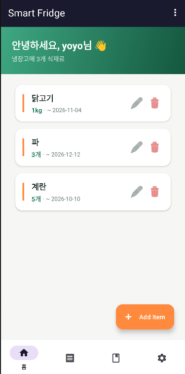
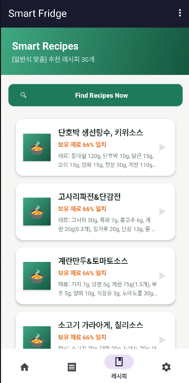
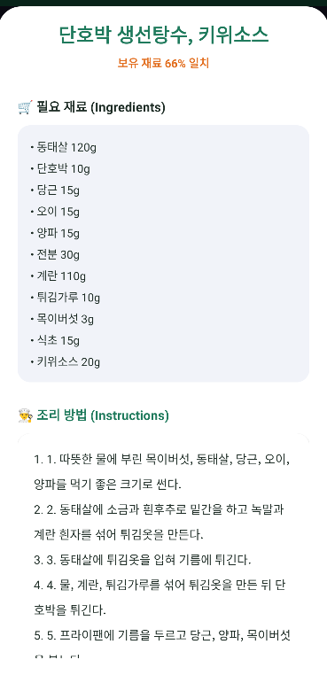

캡스톤 프로젝트
Smart Fridge
영수증 한 장으로 시작하는 AI 냉장고 관리 · 맞춤 레시피 추천 서비스
- 형태
- 2인 팀 (백엔드 · 안드로이드)
- 역할
- 백엔드 · DB · AI 연동
- 기간
- 2026.03 ~ 진행 중
음식물쓰레기가 가장 많이 나오는 곳은 가정입니다. Smart Fridge는 영수증을 찍으면 AI가 식재료를 등록하고, 유통기한을 자동으로 계산해 곧 상할 재료를 먼저 쓰는 레시피를 추천합니다. 알레르기 14종과 식단 목적 5종(일반식 · 다이어트 · 저염 · 고단백 · 비건)도 함께 반영합니다.
- Android 앱Retrofit으로 서버와 통신
- Spring Boot 서버REST API 14개 · 규칙 기반 필터
- Oracle DB공공 레시피 1,156건 · 사용자별 냉장고
- Claude API영수증 분석 · 대화형 추천 (서버에서만 호출)
틀리면 위험한 판단(알레르기 · 수치)은 규칙으로, 애매한 해석(취향 · 문장)만 AI로.
앱 화면
안드로이드 앱은 팀원이 담당했고, 화면의 냉장고 · 레시피 데이터는 제가 만든 서버 API에서 받아옵니다.
-
냉장고 목록 재료 카드와 유통기한 표시

-
맞춤 레시피 추천 보유 재료 일치율 순 정렬

-
레시피 상세 재료와 단계별 조리 순서

추천 로직: 1,156개가 5개가 되기까지
- 입력공공 레시피 1,156개데이터
- 1보유 재료 매칭규칙
- 2알레르기 14종 제외규칙
- 3식단 · 영양 기준규칙
- 4임박 재료 우선 · 상위 40개규칙
- 5AI 취향 선별 · 최대 5개AI
막대 길이는 단계별로 후보가 줄어드는 흐름을 보여 주는 개념도입니다. 틀리면 위험한 1~4단계는 규칙으로, 취향 해석인 5단계만 AI가 맡습니다.
담당 역할
- 백엔드 서버 & REST API
- Spring Boot(Java 17)로 냉장고 · 레시피 REST API 14개를 설계하고 구현했습니다. 모든 API에 입력값 검증을 적용해 문제가 있으면 사유를 담은 400 응답을 돌려줍니다.
- 데이터 수집 & DB 설계
- 식약처 공공데이터(COOKRCP01)에서 레시피 1,156건을 서버 최초 실행 시 자동 적재합니다. 영양소를 열량으로 환산해 교차검증하고, 물리적으로 불가능한 값 23건을 자동으로 걸러냈습니다. Oracle DB 스키마는 JPA로 관리합니다.
- 맞춤 추천 로직
- 보유 재료 매칭 → 알레르기 제외 → 식단 · 영양 기준 → 유통기한 임박 우선 정렬까지는 규칙으로 처리하고, 마지막에 AI가 상위 40개 중 요청에 맞는 최대 5개를 이유와 함께 고릅니다.
- AI 연동 & 키 보안
- Claude API(Haiku 4.5)로 영수증 식재료 추출, 대화형 추천, 추천 이유 설명, 영어 번역, 임박 알림 문구를 구현했습니다. API 키와 DB 접속정보는 서버 설정 파일에만 두고, 앱에는 키가 없도록 설계했습니다.
문제 해결
- 앱 코드에 AI API 키 하드코딩
- APK를 디컴파일하면 키가 노출되는 문제가 있었습니다. 영수증 분석을 서버 경유 호출로 바꾸고 키는 서버에만 보관했습니다.
- 사용자 간 데이터 혼재
- 앱은 userId를 보냈지만 서버가 무시해 모든 사용자의 재료가 섞였습니다. userId 컬럼을 추가하고 모든 조회 · 추천 API에 사용자 필터를 적용했습니다.
- 원본 데이터의 영양정보 오류
- 단백질 807g처럼 불가능한 값이 추천 순위를 왜곡했습니다. 열량 환산 교차검증으로 23건을 자동 제외했습니다.
- 영문 데이터로는 한국어 재료 매칭 불가
- '계란'으로 검색해도 'egg' 레시피가 나오지 않았습니다. 식약처 한국어 공공데이터로 교체해 영양정보와 조리순서까지 확보했습니다.
REST API · 테스트 결과
중간발표 기준 API 14개 중 9개 테스트 완료, AI 연동 5개는 API 키 발급 후 테스트 예정입니다.
| 메서드 | 엔드포인트 | 기능 | 상태 |
|---|---|---|---|
POST | /api/fridge | 식재료 추가 | 완료 |
POST | /api/fridge/bulk | 여러 재료 일괄 등록 (유통기한 자동) | 완료 |
POST | /api/fridge/scan-receipt | 영수증 사진 → AI 추출 · 저장 | 예정 |
GET | /api/fridge | 사용자별 전체 조회 (임박순) | 완료 |
GET | /api/fridge/expiring-soon | 유통기한 임박 재료 조회 | 완료 |
GET | /api/fridge/expiring-reminder | 임박 재료 + AI 알림 문구 | 예정 |
PUT DELETE | /api/fridge/{id} | 식재료 수정 · 삭제 | 완료 |
GET | /api/recipes/search | 재료 하나로 검색 | 완료 |
GET | /api/recipes/recommend-multi | 여러 재료 + 영양 · 알레르기 · 식단 필터 | 완료 |
GET | /api/recipes/recommend-auto | 냉장고 자동 반영 + 임박 우선 정렬 | 완료 |
POST | /api/recipes/ask | 자연어 대화형 추천 | 예정 |
POST | /api/recipes/explain | AI 추천 이유 설명 | 예정 |
GET | /api/recipes/{id}/translate | 레시피 영어 번역 (AI) | 예정 |
주요 테스트 케이스
| ID | 테스트 항목 | 입력 · 조건 | 실제 결과 | 판정 |
|---|---|---|---|---|
| TC-01 | 레시피 데이터 적재 | 서버 최초 실행 | 1,156건 저장 | PASS |
| TC-02 | 영양정보 이상치 검증 | 열량 환산 교차검증 | 23건 제외 | PASS |
| TC-03 | 유통기한 자동 계산 | 계란 · 우유 · 당근 · 닭가슴살 | +14 · +7 · +21 · +3일 일치 | PASS |
| TC-04 | 임박 재료 조회 | days=3 | 닭가슴살만 반환 | PASS |
| TC-05 | 임박 우선 정렬 | 냉장고 자동 추천 | 닭가슴살 레시피 최상단 | PASS |
| TC-06 | 영양소 필터 | protein ≥ 20 | 전체 결과 기준 충족 | PASS |
| TC-07 | 입력값 검증 | 이름 누락 · 음수 · 잘못된 영양소 | 3건 모두 400 | PASS |
| TC-08 | 수정 · 삭제 | PUT / DELETE | 변경 사항 반영 | PASS |
| TC-09 | AI 기능 5종 | 영수증 · 대화 · 설명 · 번역 · 알림 | API 키 발급 후 | 예정 |
사용 기술
- Java 17
- Spring Boot
- Spring Data JPA
- Oracle DB
- REST API 설계
- Claude API
- 공공데이터 API
- 입력값 검증
- Retrofit 연동
자격증
- SAP Certified – Back-End Developer – ABAP Cloud SAP가 직접 인증하는 국제 자격으로, SAP 클라우드 환경(ABAP Cloud)에서 기업용 백엔드를 개발하는 능력을 증명합니다. 유효기간 2027.04.02까지 2026.04.01 취득
- ITQ 한글엑셀 C등급 한국생산성본부 2019.06.13 취득